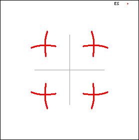
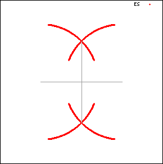

Exact Solution
Using equation from PPM's Book chapter 2.4 The 2D Ising model: exact solution
Zeros of the partition function for n=m=100 are displayed below. Next to that is the transformation x ⇒ 1 x ^ 2
 